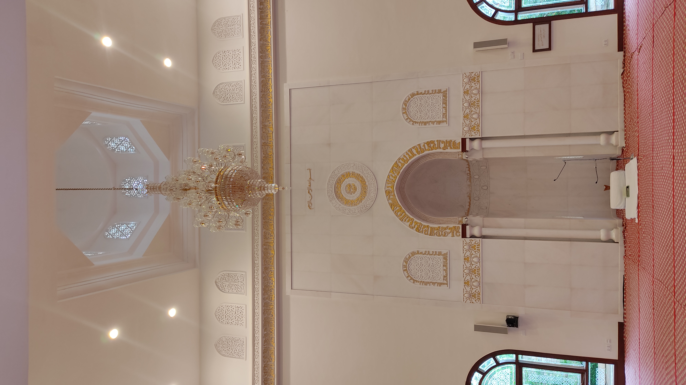
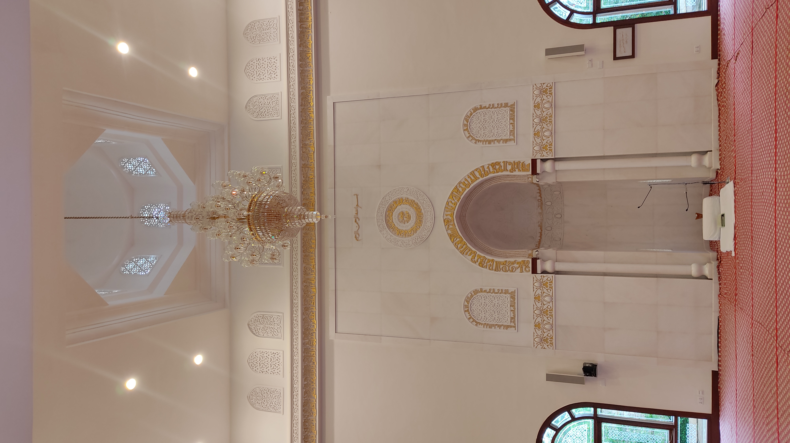

Campus Map
Click to explore!

 

Masjid al Zahra
Masjid Zahra is the main masjid on campus.
When the first plans for Jamea Nairobi were being drawn, Syedna Mohammed Burhanuddin RA instructed that a dedicated campus masjid be built.
He further directed that its architecture be inspired by al-Jāmiʿ al-Anwar, the historic eleventh century Fatimi masjid in Cairo which he had restored after centuries of neglect.
Jamea Nairobi’s masjid, named Masjid al-Zahra is the first in the world to be built entirely on the pattern of al-Jāmiʿ al-Anwar.
The masjid’s interiors and exteriors, specifically the mihrab and the main façade’s portal and twin minarets are taken from al-Jāmiʿ al-Anwar.
Masjid al-Zahra follows al-Anwar in its layout as well, although at a smaller scale.
Upon passing through the main portal, similar to al-Anwar’s projecting portal, a courtyard presents itself as it does in Cairo.
To the north of the small courtyard, or sahn, is the main masjid which draws parallels with al-Anwar’s bayt al-salāt or the main sanctuary prayer area.
Timber beams fixed to the ceiling and iconic pomegranate-shaped column capitals and bases are also inspired by the millennium old place of worship.
Mahad al Zahra
Mahad al Zahra is the hub for Quranic development.
Al Iwaan al Burhani
Al Iwaan al Burhani is a multi-purpose building that houses various administrative offices, including Maktab Tanzeem and Marhala Saqafat Aama.

Saahat
Saahat is a spacious outdoor area where various events, including Aljamea's annual convocation ceremony, take place.

al Mawaid al Badriyah
The dining hall of Aljamea is known as al-Mawāʾid.
Students, professors, instructors and all administrative staff dine in the Mawāʾid.
In addition, faculty households are provided daily with lunch and dinner that serve three to four people.
Every day approximately three thousand individuals are served, totalling some 2.2 million meals per year.
Stress upon hygiene and balanced diet is abundant throughout Fatimi texts, which is why menus are prepared after extensive consultation with nutritionists and dieticians.
Hygiene is given utmost attention to ensure that al-Mawāʾid staff and diners remain in the best of health.
The design of the mawaid is inspired by the mausoleum of Syedna Ismaʿil Badruddin RA in Jamnagar.
The ceilings circular pattern mimics the thāl formations below.

Maktabatul Jamea
Maktabat is the main library on campus, housing a vast collection of books and resources for students and faculty.

Auditorium
The auditorium hosts lectures, presentations, symposiums and the viva voce of dissertations written by final year students. Constructed to meet a large array of conferencing needs, it also serves as a venue for inter-community functions and provides a forum and means for community service and outreach.

Academics
The academic building houses the various departments of the Al Jamea tus Saifiyah. It includes classrooms, computer labs, and faculty offices. The academic building is where students attend lectures and complete assignments.
Administration
The administration building houses the offices of the various administrative departments of the Al Jamea tus Saifiyah. This includes the registrar's office, financial aid office, and other administrative offices. This is where students go for administrative assistance.
Maskan ul Rahat
Rabwat al Tawado
In Nairobi, Maskan ur Rahat is the on-campus residence for boys whilst Rabwat ut Tawazo is its equivalent for girls.
Student residences have an important role in creating an atmosphere that represents the values and norms imparted during classroom teaching.
Since this is the first experience of living away from home for many students, it encourages them to be independent and resourceful.
On one hand, students can devote more time to academic pursuits as time otherwise spent commuting is better utilised.
On the other hand, students have the opportunity to interact and socialise with others from different cities and countries.
Students share rooms of either four or eight.
The residences have their own in-house laundry, canteen, infirmary and common rooms.
Departing from conventional dormitory norms, students take turns to prepare breakfast for an entire floor of their hostel every morning.
Students are responsible for the cleaning and care of their own rooms and the general welfare of their hostel.
Responsibilities such as these help build character and instil a sense of belonging and brotherhood.